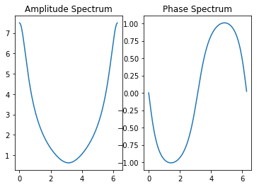
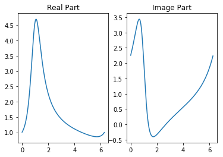
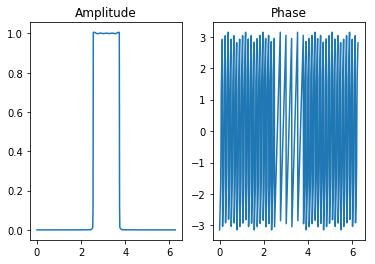
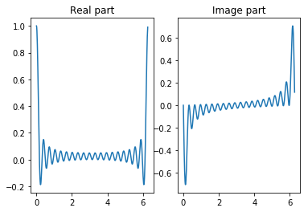
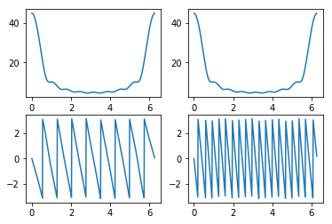
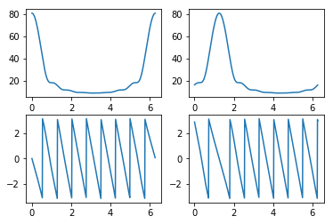
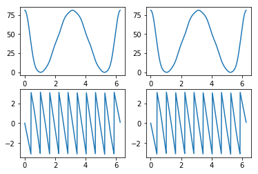
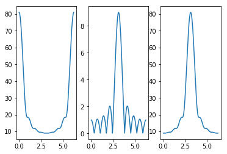
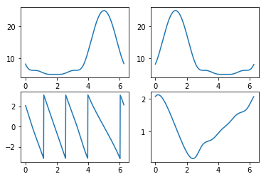

这一章开始,我们将从频域分析离散时间信号和系统.
DTFT变换¶
序列\(x[n]\)的离散时间傅里叶变换(DTFT)\(X(e^{j�omega})\)
\[X\left(e^{j \omega}\right)=\sum_{n=-\infty}^{\infty} x[n] e^{-j \omega n}\]
通常\(X(e^{j�omega})\)是实变量\(�omega\)的一个复函数,可以写成
\[X\left(e^{j \omega}\right)=X_{r e}\left(e^{j \omega}\right)+j X_{im}\left(e^{j \omega}\right)\]
其中\(X_{r e}�left(e^{j �omega}�right)\)和\(X_{im}�left(e^{j �omega}�right)\)分别是\(X(e^{j�omega})\)的实部和虚部,它们都是\(�omega\)的实函数.\(X(e^{j�omega})\)也可以表示为
\[X\left(e^{j \omega}\right)=\left|X\left(e^{j \omega}\right)\right| e^{j \theta(\omega)}\]
其中,
\[\theta(\omega)=\arg \left\{X\left(e^{j \omega}\right)\right\}\]
$:nbsphinx-math:left|X:nbsphinx-math:left`(e^{j :nbsphinx-math:omega`}:nbsphinx-math:right):nbsphinx-math:right| \(称为幅度函数,\)\theta`(:nbsphinx-math:omega`)\(称为相位函数,这两个函数都是\):nbsphinx-math:`omega`$的实函数.
当DTFT变换形式如下类似如下时,可以通过freqz计算DTFT变换
\[X\left(e^{\jmath \omega}\right)=\frac{p_{0}+p_{1} e^{-j \omega}+\cdots+p_{M} e^{-j \omega M}}{d_{0}+d_{1} e^{-j \omega}+\cdots+d_{N} e^{-j \omega N}}\]
[1]:
import matplotlib.pyplot as plt
import numpy as np
from scipy import signal
# 离散时间傅里叶变换
w = np.arange(-4*np.pi,4*np.pi,8*np.pi/511)
num = np.array([2,1])
den = np.array([1,-0.6])
ws, h = signal.freqz(num,a=den,whole=True)
# 离散时间傅里叶变换的实部和虚部
plt.subplot(121)
plt.plot(ws,np.real(h))
plt.title('Real Part')
plt.subplot(122)
plt.plot(ws,np.imag(h))
plt.title('Image Part')
[1]:
Text(0.5, 1.0, 'Image Part')
[2]:
# 离散时间傅里叶变换的幅度谱和相位谱
plt.subplot(121)
plt.plot(ws,np.abs(h))
plt.title('Amplitude Spectrum')
plt.subplot(122)
plt.plot(ws,np.angle(h))
plt.title('Phase Spectrum')
[2]:
Text(0.5, 1.0, 'Phase Spectrum')

离散时间傅里叶变换的收敛性¶
指数序列¶
指数序列定义为
\[ \begin{align}\begin{aligned} x[n] = A \alpha ^n \mu[n]\\其中,\ :math:`A`\ 和\ :math:`\alpha`\ 是任意的实数或者复数,表示为\end{aligned}\end{align} \]
\[\alpha = e^{\sigma_0+j\omega_0} \quad A = |A|e^{j\phi}\]
其离散时间傅里叶变换为
\[\begin{split}\begin{split}
X(e^{j\omega})&=|A|e^{j\phi}\sum_{n=-\infty}^{\infty} \alpha^n \mu[n] e^{-j\omega n} = |A|e^{j\phi}\sum_{n=0}^{\infty} \alpha^n e^{-j\omega n} \\
X(e^{j\omega})&= \frac{|A|e^{j\phi}}{1-\alpha e^{-j\omega}}
\end{split}\end{split}\]
[3]:
# 产生一个指数序列:sigma=-0.5,w0=0.15,phi=0.2,|A|=10
N = 100
n = np.arange(N) # 定义序号
w0=0.15
phi=0.5
A=2
sigma=-0.5 # try some value of sigma >0
en = A*np.exp(sigma*n+1j*(2*np.pi*n*w0+phi))
ws, h = signal.freqz(en,whole=True)
# 离散时间傅里叶变换的实部和虚部
plt.subplot(121)
plt.plot(ws,np.real(h))
plt.title('Real Part')
plt.subplot(122)
plt.plot(ws,np.imag(h))
plt.title('Image Part')
plt.show()

Sinc序列与矩形窗频谱¶
\[\begin{split}h_{LP}[n] = \frac{\sin \omega_c n}{\omega_c n} \longleftrightarrow H_{LP}(e^{j\omega}) = \begin{cases}
1, & \quad 0\leq |\omega| \leq \omega_c\\
0, & \quad \omega_c \leq |\omega| \leq \pi
\end{cases}\end{split}\]
[4]:
# Sinc函数和矩形窗
N = 2000 # increase N, then the spectrum converge to window function
Nc = np.int(N/2)
n = np.arange(N) # 定义序号
w0=0.6
phi=np.pi
sinc = np.sin(w0*(n-N/2))/np.pi/(n-N/2)
sinc[Nc]=w0/np.pi
sinc = sinc*np.exp(1j*phi*n)
ws, h = signal.freqz(sinc,whole=True)
# 离散时间傅里叶变换的实部和虚部
plt.subplot(121)
plt.plot(ws,np.abs(h))
plt.title('Amplitude')
plt.subplot(122)
plt.plot(ws,np.angle(h))
plt.title('Phase')
plt.show()
/Users/lyu/anaconda3/lib/python3.6/site-packages/ipykernel_launcher.py:8: RuntimeWarning: invalid value encountered in true_divide

常数序列¶
[5]:
# Sinc函数和矩形窗
N = 20 # increase N,
Nc = np.int(N/2)
n = np.arange(N) # 定义序号
w0=0.6
phi=np.pi
x = np.ones([N,])/N
ws, h = signal.freqz(x,whole=True)
# 离散时间傅里叶变换的实部和虚部
plt.subplot(121)
plt.plot(ws,np.real(h))
plt.title('Real part')
plt.subplot(122)
plt.plot(ws,np.imag(h))
plt.title('Image part')
plt.show()

离散时间傅里叶变换的性质¶
时移定理¶
[6]:
num = np.array([1,2,3,4,5,6,7,8,9])
ws, h1 = signal.freqz(num,whole=True)
D = 10
ws, h2 = signal.freqz(np.concatenate((np.zeros([D,]),num),axis=0),whole=True)
plt.subplot(221)
plt.plot(ws,np.abs(h1))
plt.subplot(222)
plt.plot(ws,np.abs(h2))
plt.subplot(223)
plt.plot(ws,np.angle(h1))
plt.subplot(224)
plt.plot(ws,np.angle(h2))
# 幅度谱不变,相位谱变化
[6]:
[<matplotlib.lines.Line2D at 0x131493ba8>]

频移定理¶
[7]:
num = np.array([1,3,5,7,9,11,13,15,17])
n = np.arange(len(num))
w0 = 0.4*np.pi # 尝试改变这个大小,然后观察显示的图形, 并结合理论分析
num1 = np.exp(1j*w0*n)*num
ws, h1 = signal.freqz(num,whole=True)
ws, h2 = signal.freqz(num1,whole=True)
plt.subplot(221)
plt.plot(ws,np.abs(h1))
plt.subplot(222)
plt.plot(ws,np.abs(h2))
plt.subplot(223)
plt.plot(ws,np.angle(h1))
plt.subplot(224)
plt.plot(ws,np.angle(h2))
# 幅度谱和相位谱平移
[7]:
[<matplotlib.lines.Line2D at 0x1310d31d0>]

卷积定理¶
[8]:
# 时域卷积,频域相乘
num1 = np.array([1,3,5,7,9,11,13,15,17])
num2 = np.array([1,-2,3,-2,1])
y = signal.convolve(num1,num2)
ws, h1 = signal.freqz(num1,whole=True)
ws, h2 = signal.freqz(num2,whole=True)
ws, h3 = signal.freqz(y,whole=True)
hp = h1*h2
plt.subplot(221)
plt.plot(ws,np.abs(h3))
plt.subplot(222)
plt.plot(ws,np.abs(hp))
plt.subplot(223)
plt.plot(ws,np.angle(h3))
plt.subplot(224)
plt.plot(ws,np.angle(hp))
[8]:
[<matplotlib.lines.Line2D at 0x1311adc18>]

调制定理¶
[9]:
# 时域乘积,频域卷积
num1 = np.array([1,3,5,7,9,11,13,15,17])
num2 = np.array([1,-1,1,-1,1,-1,1,-1,1])
y = num1*num2
ws, h1 = signal.freqz(num1,whole=True)
ws, h2 = signal.freqz(num2,whole=True)
ws, h3 = signal.freqz(y,whole=True)
# hp = signal.convolve(h1,h2)
# hp = hp[:(len(ws))]/len(ws)
plt.subplot(131)
plt.plot(ws,np.abs(h1))
plt.subplot(132)
plt.plot(ws,np.abs(h2))
plt.subplot(133)
plt.plot(ws,np.abs(h3))
# plt.subplot(224)
# plt.plot(ws,np.angle(hp))
[9]:
[<matplotlib.lines.Line2D at 0x1315ff550>]

翻转定理¶
[10]:
# 时域翻转,频域翻转
num1 = np.array([1,3,5,7,9])
w0 = 5
num1 = num1*np.exp(np.arange(len(num1))*1j*w0)
num2 = np.flipud(num1)
ws, h1 = signal.freqz(num1,whole=True)
ws, h2 = signal.freqz(num2,whole=True)
plt.subplot(221)
plt.plot(ws,np.abs(h1))
plt.subplot(222)
plt.plot(ws,np.abs(h2))
plt.subplot(223)
plt.plot(ws,np.angle(h1))
plt.subplot(224)
plt.plot(ws,np.angle(h2))
[10]:
[<matplotlib.lines.Line2D at 0x131779fd0>]

[ ]: